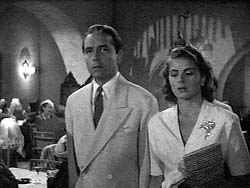
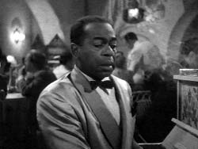
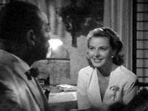
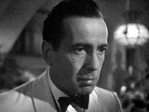
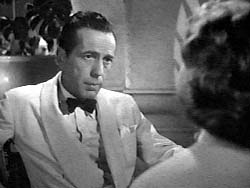
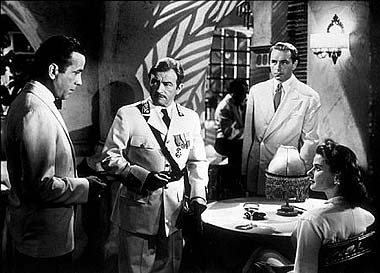
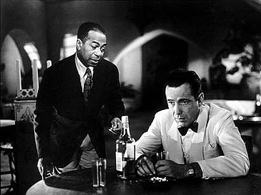

|

Texto de
Susana
Lopes de Alexandria

Ttulo
foi tirado de "Casablanca" (2)

|
 Alguns minutos depois, Victor Laszlo (Paul Henreid) chega ao Rick's Caf acompanhado de uma bela mulher. Era para os dois que Ugarte iria vender os vistos.  A mulher v um pianista tocando no bar e o reconhece: Sam (Dooley Wilson).  Enquanto Victor Laszlo procura por Ugarte (sem saber que ele foi preso), a mulher aproxima-se de Sam e pede para ele tocar algumas msicas dos velhos tempos. Sam a reconhece e a chama pelo nome: Ilsa (Ingrid Bergman). Ela pede que ele toque As Time Goes By -- a clebre cano tema do filme. Para ouvir a msica, clique aqui (Midi, 16KB).  Ao ouvir a msica, Rick vai at Sam e comea a dar-lhe uma bronca, pois tinha dado ordens para ele jamais tocar aquela cano novamente. S ento ele v a mulher que est ao lado do pianista e olha para ela, surpreso.  Aqui ficamos sabendo que eles j se conhecem, de Paris, e que existe alguma coisa entre os dois.  A conversa de Rick e Ilsa interrompida quando Victor Laszlo e o capito Renault sentam-se mesa com eles. Renault apresenta Rick a Ilsa, mas ela diz que eles j se conhecem, de Paris.
 Quando o bar fecha, Rick fica bebendo, sozinho, apenas na companhia de Sam, a quem pede que toque As Time Goes By novamente. Lembranas de Paris vm sua cabea, num flashback. Clique aqui para ouvir a msica. |